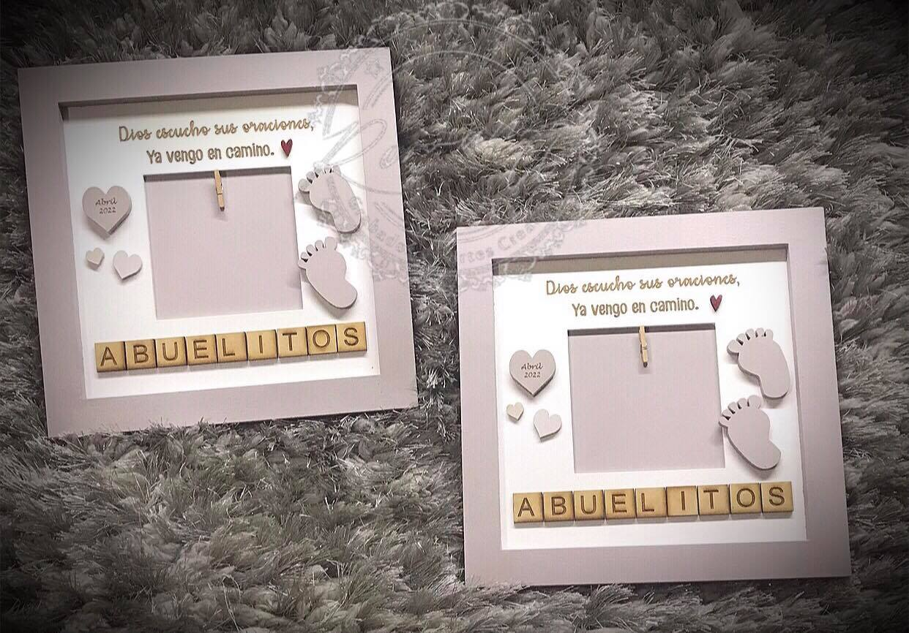

Hay noticias que se guardan debajo de la lengua durante días, esperando el momento justo. Y cuando por fin llega, quieres que el "¡estoy embarazada!" sea tan especial como lo que estás sintiendo por dentro. Ahí es donde entra un detalle que se ha vuelto la estrella de todas las páginas de maternidad: el letrero de bebé en camino.
Puede aparecer en la foto que le mandas al chat de la familia, colgado en la puerta de tu casa cuando llegan los abuelos a celebrar, o como la pista principal de tu fiesta de género. Este letrerito convierte la gran noticia en un recuerdo que vas a conservar toda la vida. Te cuento qué es, cómo usarlo para dar la noticia y cuándo pedirlo.
¿Qué es un letrero de bebé en camino?
Un letrero de bebé en camino es un cartel — en Romanzza los hacemos en MDF cortado con láser y pintado a mano — con un mensaje dulce y directo: bebé en camino. Puede llevar el nombre del bebé (o los nombres, si vienen dos), la fecha en que esperas conocerlo o un dibujito que dé pistas del género. La idea es sencilla: lo cuelgas en la puerta de tu casa cuando la familia llega a celebrar, lo integras a tus fotos de anuncio y, cuando la espera termina, pasa a ser el primer recuerdo de esta historia.
Y es que esta etapa de espera merece su propio símbolo. Antes de que llegue el turno del colgante de maternidad en la puerta de la habitación — ese que lleva el nombre del recién nacido — el letrero de bebé en camino ocupa el lugar de honor: es el primero de la serie de recuerdos que empiezan con la ecografía y terminan con los primeros días en casa.
Además, es un aliado de los anuncios creativos: si planeas un gender reveal, el letrero puede acompañar la revelación o quedarse como la pista inicial del misterio. Y si tu anuncio va a ser íntimo, solo entre ustedes y los abuelos, un letrerito en la puerta de la casa lo dice todo sin necesidad de discursos.
5 ideas para anunciar tu embarazo con tu letrero
Ahora sí, manos a la obra. Estas son cinco formas lindas de usar tu letrero para dar la noticia:
La foto sorpresa. La favorita de las familias: tú y tu pareja sostienen el letrero frente al pecho y esa imagen viaja directo al chat familiar. Si quieres derretir el corazón de los abuelos, el marco de ecografía de Romanzza es ideal para la ocasión: con frases como "Ya vengo en camino", un espacio para la primerita ecografía y detalles hechos a mano, es de esos regalos que se quedan pegados en el corazón (y en la refrigeradora, con un imán, pero eso es otra historia).

La puerta de tu casa. Cuando los abuelos lleguen de visita, recíbelos con el letrero colgado en la puerta. La frase "Pronto habrá un nuevo corazoncito en esta casa" se lee apenas entra la gente, y el grito de emoción ese no lo ves venir, pero te lo imaginas.
El anuncio en redes. Una foto limpia — el letrero sobre la panza, junto a los zapatitos del bebé o sobre la cama recién acomodada — y la descripción con la fecha de llegada. Es la fórmula que nunca falla y la que más se comparte.
La foto de las manitas. Sobre un fondo claro, coloca el letrero y las manos de papá y mamá formando un corazón alrededor. Sencilla, íntima y preciosa.
La revelación del género. Si ya saben si es niño o niña — o lo van a descubrir en la fiesta — un elemento extra junto al letrero hace la delicia de todos: un moño rosa, un zapatito azul o el clásico globo negro que explota en confeti.
Del anuncio a la llegada: dos letreros, una misma historia
Hay algo verdaderamente bonito de este ritual: los recuerdos se van encadenando. Primero es el letrero de bebé en camino en tus fotos de anuncio y en la puerta de tu casa. Después, cuando tu peque está por llegar, el turno es del colgante de maternidad con su nombre en la puerta de la habitación del hospital. Y aquí va un lindo secreto de las familias que ya lo vivieron: ese colgante no se despide ahí — muchas lo vuelven a colgar en el cuarto del bebé, para que su nombre también lo reciba cada noche.
En Romanzza lo personalizamos en marcos, atrapasueños, bases redondas o tablones con flores, y cada pieza incluye los mini colgantes de Nací, Medí y Pesé — la fecha, la talla y el peso de su llegada: el primer recuerdo oficial que la familia se queda para siempre.
Mientras tanto, disfruta el camino. Decora el cuarto a tu ritmo, prueba nombres con calma y, si quieres un adelanto muy dulce, las iniciales con nombre en acrílico con luz LED pueden anticipar la letra de su nombre en el cuarto desde ya: hoy es parte del anuncio y mañana será la lamparita de sus primeras noches. Lo que empieza como un simple letrero se convierte, poco a poco, en el primer mundo de tu bebé.
¿Cuándo pedir tu letrero?
Ni un día menos: pide con tiempo. Cada diseño se personaliza con el nombre o los nombres que tú quieras y se termina a mano en el taller de Romanzza, en Monterrey. La entrega estándar es de 12 días hábiles y hay opción express de 3 días con un costo adicional de $200 MXN, por si la noticia ya viajó más rápido que el letrero.
Y un consejo cariñoso: si ya tienes fecha para tu anuncio o para tu sesión de fotos, pide tu letrero entre dos y tres semanas antes para que llegue listo para el momento. Si todavía no se deciden entre dos nombres — nos pasa muy seguido en el taller — cotiza con calma y mándanos el elegido por WhatsApp cuando lo tengan: le colocamos el nombre y queda listo.
Tip para el recuerdo: guarda tu letrero junto a la prueba de embarazo y la primera ecografía. Juntos forman el primer capítulo de la historia de tu bebé — el que algún día vas a querer narrarle completo.
Haz Tu Pedido Personalizado
En Romanzza creamos piezas únicas de corte láser, personalizadas con el nombre de tu bebé. Hechas a mano en Monterrey.
Ver Colgantes¿Ya tienes la fecha marcada en el calendario? Entonces es momento de pensar en el letrerito que va a estrenar la noticia. Un letrero de bebé en camino no es un adorno más: es el primer recuerdo físico de tu embarazo, la foto que vas a mirar por años y un detalle que la familia entera recordará con risas y lagrimitas.
Explora el catálogo de colgantes de maternidad de Romanzza para encontrar tu diseño ideal, o escríbenos por WhatsApp y lo creamos a tu medida. En nuestro taller de Monterrey cortamos y pintamos cada pieza a mano, porque sabemos que detrás de cada letrero hay una historia que apenas comienza. ¡Felicidades, mamá! Lo que viene son cosas lindas.